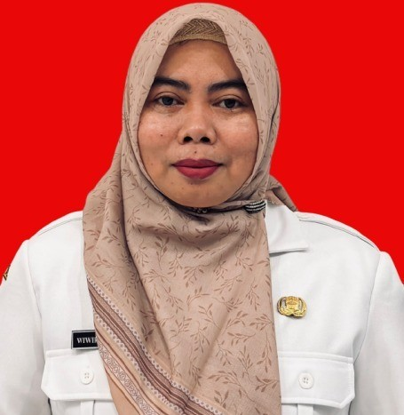
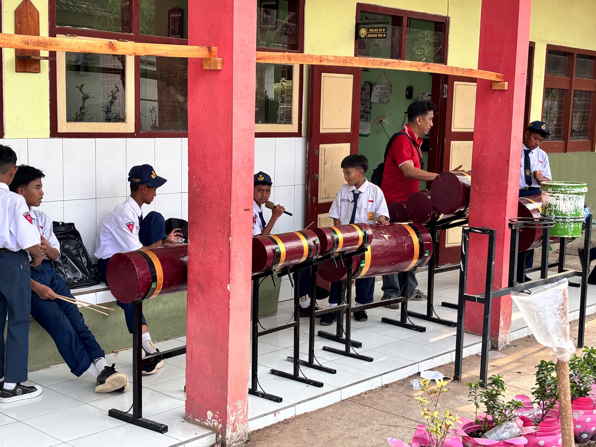
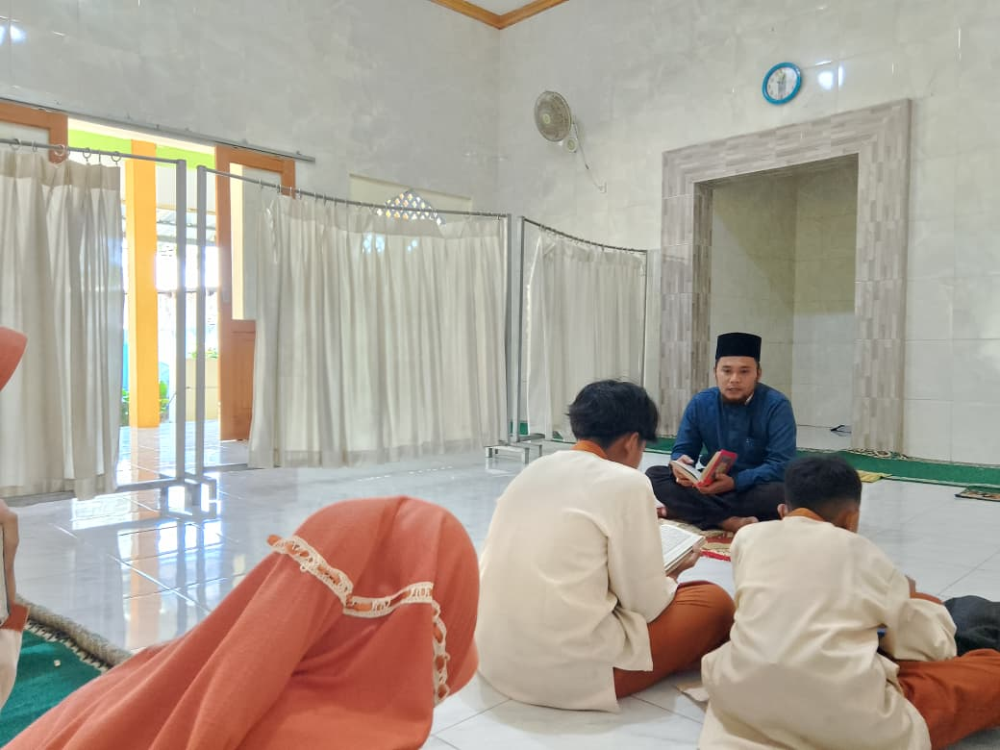
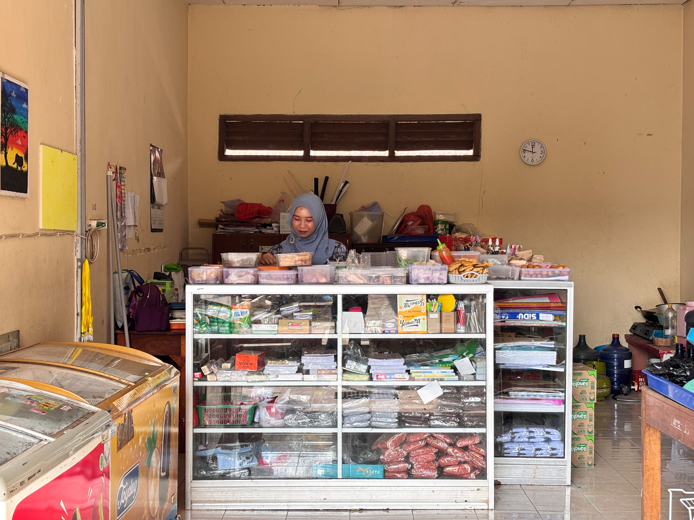
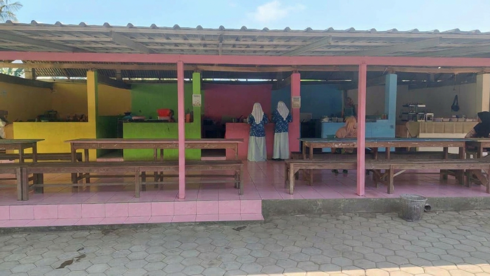
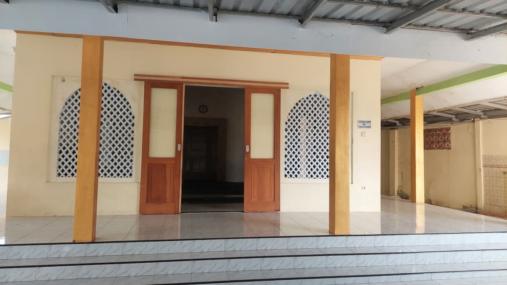

Selamat Datang di SMPN 1 Panti
SPANJI LESTARI
Mendidik generasi unggul, berkarakter, dan siap bersaing.
Sekolah negeri berpredikat Adiwiyata yang berkomitmen membangun pendidikan berkualitas, menumbuhkan semangat belajar, serta menyiapkan siswa menjadi pribadi yang cerdas, disiplin, dan berdaya saing tinggi.
08°10'S 113°34'E
Kec. Panti, Kab. Jember
Sekolah Kami
SMPN 1 Panti Data
0
Siswa Aktif
0
Guru & Tenaga Pendidik
0
Prestasi & Penghargaan

46
Tahun Mengabdi
Hubungi sekolah
SMP Negeri 1 Panti berdiri pada tahun 1981 sebagai filial SMP Negeri Rambipuji 1 dengan tiga kelas yang menempati gedung SD Negeri I Panti. Seiring perkembangannya, sekolah ini mulai menempati gedung sendiri pada tahun 1983/1984 yang diresmikan oleh Gubernur Jawa Timur, Wahono, pada 28 November 1984. Hingga kini, SMP Negeri 1 Panti terus berkembang sebagai lembaga pendidikan yang berkomitmen mencetak generasi unggul, berprestasi, berkarakter, dan siap menghadapi tantangan masa depan.
Lokasi
Kec. Panti, Kab. Jember, Jawa Timur
Visi & Misi
Terwujudnya insan yang beriman, berakhlak mulia, berkarakter, dan berprestasi. Lihat visi & misi lengkap.
Profil Sekolah
Struktur Organisasi
Kepala Sekolah
WIWIK INDIYAWATI, S.Pd.

Tata Usaha
HENI HOROYANDONO.

Kurikulum
FA'IS FENNY NURDIANA, S.Pd.
Sarana & Prasarana
NUR YUSUF HABIBI, S.Pd.

Kesiswaan
M. SELVY ALAMUL H, S.Pd.

Perpustakaan
SITI ASFIHANA RAHMAWATI, SS.

Bimbingan & Konseling
SITI BADRIYAH, S.Pd.

Siswa
← Kembali ke struktur organisasi
Struktur Organisasi
Guru Mata Pelajaran
Guru Mapel
Mendampingi perkembangan siswa di kelas.
Guru PAI & BTQ
Hj. SITI ZULAIKHA, S.Ag
M. SELVY ALAMUL HUDA, S.PdI
AHMAD FAIZAL, S.Pd
Guru Bahasa Indonesia
ENDANG HESTININGSIH, S.Pd
INDAH SRIWULANDARI, S.S
NUR YUSUF HABIBI, S.Pd
Guru Bahasa Inggris
Drs. SURIYANTO ADI SAPUTRA
SITI ASFIHANA RAHMAWATI, SS.
JENI INDRI ASTUTIK, S.S.
Guru Bahasa Daerah
LILIS SUMARNI, S.Pd.
IMAS AMALIA NURISWATI, S.Pd
Guru IPS
ASTIYANI, S.Pd
TITIK SETYOWATI, S.E.
Guru Matematika
CUCUT MASTITAH, S.Pd
AHMAD FAIZUL KARIM, S.Pd
EVI RAHMAWATI, S.Pd.
FALIH HELMI WIBISONO P., S.Pd
IRBAH NURJANNAH, S.Pd
MUCHAMMAD CHAIZUL C. M., S.Pd
Guru IPA
YULIATI, S.Pd
FA'IS FENNY NURDIANA, S.Pd
LILIS SUMARNI, S.Pd.
M. DARWIS ANDI MUKHTAROM, S.Pd
Guru Koding & Kecerdasan Artifisial
AHMAD FAIZUL KARIM, S.Pd
EVI RAHMAWATI, S.Pd.
FALIH HELMI WIBISONO P., S.Pd
MUCHAMMAD CHAIZUL C. M., S.Pd
Guru PPKn
MUHAMMAD SHOLEH, SH.
M. DARWIS ANDI MUKHTAROM, S.Pd
IMAS AMALIA NURISWATI, S.Pd
MUCHAMMAD CHAIZUL C. M., S.Pd
Guru Informatika
JOKO KINARYOADI, S.Pd
M. DARWIS ANDI MUKHTAROM, S.Pd
SEPTIAN DWI CAHYO, S.Pd
AHMAD FAIZAL, S.Pd
Guru PJOK
DANANG ARGO WAHYU I., S.Pd
JOKO KINARYOADI, S.Pd
SEPTIAN DWI CAHYO, S.Pd
Guru Prakarya
SITI BADRIYAH, S.Pd
FA'IS FENNY NURDIANA, S.Pd
DANANG ARGO WAHYU I., S.Pd
Visi & Misi
Komitmen Pendidikan Yang Terarah
Terwujudnya insan yang beriman, berakhlak mulia, berkarakter, berprestasi, dan berbudaya lingkungan.
- BerimanMembiasakan ibadah, kejujuran, dan kesantunan.
- BerkarakterMenerapkan disiplin, kemandirian, dan tanggung jawab.
- BerprestasiMengembangkan potensi setiap murid.
- Peduli lingkunganMenjaga alam, kebersihan, dan lingkungan sekitar.
Misi
-
Iman & Akhlak
Membiasakan nilai agama dan etika.
-
Karakter & Positif
Membangun disiplin, kemandirian, gotong royong, kreativitas, dan sikap kritis.
-
Pembelajaran Bermakna
pembelajaran kontekstual, berbasis, teknologi, dan berpusat pada murid.
-
Pengembangan Potensi
Mengoptimalkan prestasi akademik dan nonakademik. (growth mindset).
-
Budaya Lingkungan
Membangun lingkungan yang bersih, sehat, aman, hijau, dan berkelanjutan.
-
Tata Kelola Bermutu
Bekerja secara profesional, kolaboratif, transparan, dan bermitra.
Prestasi
Kompetisi dan pencapaian siswa
82
Lomba Akademik
42
Prestasi Olahraga
19
Kejuaraan Seni
48
Prestasi Non Akademik
34
Juara Tingkat Kabupaten
Keunggulan Sekolah
Program & fasilitas unggulan


Akademik
Program pembelajaran yang menekankan pengembangan kompetensi akademik, karakter, dan keterampilan akademik siswa.
Sekolah Model Pembelajaran Mendalam (PM)
Koding & Kecerdasan Artifisial (KKA)





.png)





Ekstrakurikuler
Pramuka, olahraga, seni, dan kegiatan pengembangan bakat siswa.






Fasilitas
Ruangan kelas nyaman, perpustakaan, kantin bersih, koprasi, Ruang Bimbingan Konseling, dan lapangan olahraga yang luas.


Prestasi
Berbagai penghargaan tingkat kabupaten hingga provinsi di bidang akademik dan non-akademik.
Fasilitas Sekolah
Lingkungan belajar yang nyaman & lengkap
Tiga fasilitas utama yang menunjang kegiatan belajar mengajar di SMPN 1 Panti.

Ruang Belajar
Ruang Kelas
Ruangan kelas bersih, nyaman, dan mendukung proses pembelajaran aktif.
Literasi
Perpustakaan Sekolah
Koleksi buku pelajaran, referensi, dan bacaan umum untuk mendukung minat baca siswa.


Olahraga & Ekstrakurikuler
Lapangan dan Kegiatan Siswa
Area olahraga, kegiatan upacara, kegiatan ekstrakurikuler, dan pelatihan bakat siswa di lingkungan sekolah.
← Kembali ke beranda
Kontak